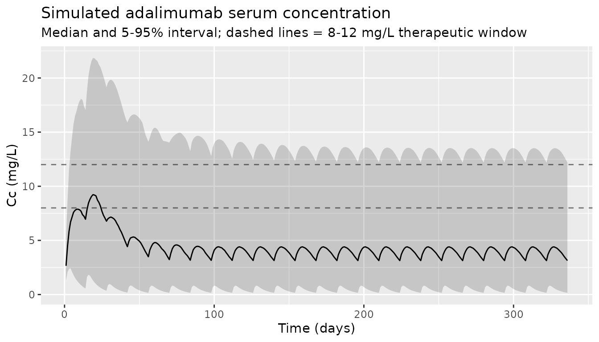

Adalimumab (Marquez-Megias 2023)
Source:vignettes/articles/Marquez-Megias_2023_adalimumab.Rmd
Marquez-Megias_2023_adalimumab.RmdModel and source
- Citation: Marquez-Megias S, Nalda-Molina R, Mas-Serrano P, Ramon-Lopez A. Population Pharmacokinetic Model of Adalimumab Based on Prior Information Using Real World Data. Biomedicines 2023;11(10):2822.
- Article: https://doi.org/10.3390/biomedicines11102822
- PubMed: https://pubmed.ncbi.nlm.nih.gov/37893195/
The model is a one-compartment population PK model with first-order
subcutaneous absorption and linear elimination, parameterized in
apparent clearance (CL/F) and apparent volume (V/F). The covariate model
places a power effect of serum albumin and a categorical effect of
anti-adalimumab antibody (AAA) status on CL/F. The absorption rate
constant ka and the AAA effect were fixed to the Ternant
2015 reference-model values, while the remaining structural parameters
and the IIV variances were re-estimated on a Spanish IBD
therapeutic-drug-monitoring cohort using informative priors on the IIV
terms (Marquez-Megias 2023, Sections 2.3 and 3.2).
Population
The estimation dataset comprised 54 patients with inflammatory bowel disease (IBD) treated with subcutaneous adalimumab and followed at the Dr. Balmis General University Hospital of Alicante, Spain between 2014 and 2022. Median age was 43.5 years (range 11-89), 55.6% were male, median weight was 66.5 kg (range 34.8-94.0), and median serum albumin was 3.86 g/dL (range 1.97-4.96). Most patients had Crohn’s disease (85.2%); the remainder had ulcerative colitis. Anti-adalimumab antibodies were detected in 9 patients (16.7%). 70.4% of patients received the originator (Humira), and 27.8% biosimilars (HYRIMOZ or IDACIO). The analysis dataset included 148 trough serum concentrations (19 during induction, 129 during maintenance) measured by ELISA (TheraDiag LISA TRACKER Duo) with an LLOQ of 0.1 mg/L. See Marquez-Megias 2023 Table 1 for the full demographic summary.
The same metadata is available programmatically via
readModelDb("Marquez-Megias_2023_adalimumab")$population.
Source trace
| Equation / parameter | Value | Source location |
|---|---|---|
lka (= log ka) |
log(0.00625 1/h), fixed | Section 3.2 (paragraph 1); Table 3 (Reference Model column) |
lcl (= log CL/F) |
log(0.0312 L/h) | Table 3, Final Model |
lvc (= log V/F) |
log(7.76 L) | Table 3, Final Model |
e_ada_cl (AAA mult) |
4.5, fixed | Section 3.2; Equation (3); Reference Model value |
e_alb_cl (ALB exp) |
-2.33 | Table 3, Final Model |
etalcl ~ omega^2 |
0.667^2 = 0.4449 | Table 3, Final Model (interpreted as omega on log scale) |
etalvc ~ omega^2 |
0.477^2 = 0.2275 | Table 3, Final Model (interpreted as omega on log scale) |
propSd |
0.547 | Table 3, Final Model |
| ALB reference (mALB) | 3.77 g/dL | Equation (3) explanatory text |
| Equation: CL/F | CL/F = CL_pop * (1 + AAA4.5) (ALB/3.77)^(-2.33) | Equation (3); Figure S1 (Monolix code) |
| ODE: depot | d/dt(depot) = -ka * depot | Figure S1 pkmodel(ka, V, Cl)
|
| ODE: central | d/dt(central) = ka * depot - (CL/V) * central | Figure S1 pkmodel(ka, V, Cl)
|
| Observation | Cc = central / V | Figure S1 output = Cc
|
| Residual error | proportional only | Section 3.2 (paragraph 2) |
Errata
The Discussion (Section 4, paragraph on albumin) states “CL/F
increases 12-fold as albumin rises from the lowest value (1.97 g/dL) to
the highest value (4.96 g/dL).” This wording is internally inconsistent
with the preceding sentence (“patients with lower albumin have a higher
CL/F”) and with the model’s own e_alb_cl = -2.33 exponent.
With the negative exponent the model predicts CL/F decreases as
albumin rises:
e_alb_cl <- -2.33
ratio_low_to_high <- (1.97 / 4.96)^e_alb_cl
ratio_low_to_high # ~8.6 — model-predicted CL/F ratio at low vs high albumin
#> [1] 8.597378The implementation here uses the published exponent value
(-2.33) and the documented direction of effect (lower
albumin -> higher clearance); the 12-fold figure in the Discussion
appears to be a wording / arithmetic error in the publication (no
erratum was located).
Virtual cohort
We simulate a 200-subject cohort whose covariates approximate the Final Model column of Marquez-Megias 2023 Table 1.
set.seed(20231018) # paper publication date
n_sub <- 200L
# Albumin: report the median (3.86) and the support (1.97-4.96). We use a
# beta distribution rescaled to that range with a shape that produces a
# median near 3.86 and a heavier left tail (matching IBD populations where
# active disease pulls albumin downward).
alb_sample <- function(n) {
# Beta(5, 2) rescaled has median ~ 3.85 g/dL on (1.97, 4.96).
pmin(pmax(1.97 + (4.96 - 1.97) * rbeta(n, shape1 = 5, shape2 = 2), 1.97), 4.96)
}
cohort <- tibble::tibble(
id = seq_len(n_sub),
ALB = alb_sample(n_sub),
ADA_POS = as.integer(runif(n_sub) < 0.167), # 16.7% positivity, paper Table 1
treatment = "40 mg q14d SC"
)
summary(cohort$ALB)
#> Min. 1st Qu. Median Mean 3rd Qu. Max.
#> 2.690 3.790 4.176 4.114 4.493 4.922
mean(cohort$ADA_POS)
#> [1] 0.21
# Time unit is hours (matching ka = 0.00625 1/h). Build a regimen consistent
# with the paper: induction 160/80 mg at weeks 0/2, then 40 mg every 2 weeks
# through 48 weeks (~ 12 maintenance doses).
hours_per_day <- 24
hours_per_week <- 7 * hours_per_day
induction_times <- c(0, 2 * hours_per_week)
induction_doses <- c(160, 80)
maint_start <- 4 * hours_per_week
maint_end <- 48 * hours_per_week
maint_times <- seq(maint_start, maint_end, by = 2 * hours_per_week)
maint_doses <- rep(40, length(maint_times))
dose_times <- c(induction_times, maint_times)
dose_amts <- c(induction_doses, maint_doses)
# Observation grid: one observation per day for the first 8 weeks (capture
# induction + first few maintenance peaks), then daily, plus a 1-hour-before-
# each-maintenance-dose sample so steady-state troughs can be measured exactly.
obs_times <- sort(unique(c(
seq(0, 48 * hours_per_week, by = hours_per_day),
maint_times - 1 # one-hour-pre-dose samples
)))
obs_times <- obs_times[obs_times >= 0]
events <- cohort |>
rowwise() |>
do({
cov <- .
bind_rows(
tibble(id = cov$id, time = dose_times, evid = 1L,
amt = dose_amts, cmt = "depot",
ALB = cov$ALB, ADA_POS = cov$ADA_POS,
treatment = cov$treatment),
tibble(id = cov$id, time = obs_times, evid = 0L,
amt = 0, cmt = "central",
ALB = cov$ALB, ADA_POS = cov$ADA_POS,
treatment = cov$treatment)
)
}) |>
ungroup() |>
arrange(id, time, desc(evid))
stopifnot(!anyDuplicated(unique(events[, c("id", "time", "evid")])))Simulation
mod <- readModelDb("Marquez-Megias_2023_adalimumab")
sim <- rxode2::rxSolve(
mod, events = events,
keep = c("treatment", "ALB", "ADA_POS")
)
#> ℹ parameter labels from comments will be replaced by 'label()'Replicate published results
The paper does not publish a typical concentration-time profile, but it does report that 68.2% of trough samples were below 8 mg/L, 16.2% between 8 and 12 mg/L, and 15.6% above 12 mg/L (Section 3.1). The median observed serum concentration was 4.90 mg/L (Table 1). We compute the trough at the end of each maintenance interval in the simulation and report the resulting distribution.
# Population concentration vs time (median + 5-95% interval)
sim |>
filter(time > 0) |>
group_by(time) |>
summarise(
Q05 = quantile(Cc, 0.05),
Q50 = quantile(Cc, 0.50),
Q95 = quantile(Cc, 0.95),
.groups = "drop"
) |>
ggplot(aes(time / hours_per_day, Q50)) +
geom_ribbon(aes(ymin = Q05, ymax = Q95), alpha = 0.2) +
geom_line() +
geom_hline(yintercept = c(8, 12), linetype = "dashed", alpha = 0.5) +
labs(
x = "Time (days)", y = "Cc (mg/L)",
title = "Simulated adalimumab serum concentration",
subtitle = "Median and 5-95% interval; dashed lines = 8-12 mg/L therapeutic window"
)
# Compute the simulated trough (concentration just before each maintenance
# dose, after steady state). Steady-state range chosen as weeks 16-48
# (after at least 6 maintenance doses).
ss_dose_times <- maint_times[maint_times >= 16 * hours_per_week]
trough_times <- ss_dose_times - 1 # 1 h before next dose
troughs <- sim |>
filter(time %in% trough_times) |>
mutate(
band = cut(
Cc,
breaks = c(-Inf, 8, 12, Inf),
labels = c("<8 mg/L", "8-12 mg/L", ">12 mg/L"),
right = FALSE
)
)
trough_counts <- troughs |>
group_by(band, .drop = FALSE) |>
summarise(n_simulated = n(), .groups = "drop")
trough_summary <- data.frame(
band = c("<8 mg/L", "8-12 mg/L", ">12 mg/L"),
pct_simulated = 100 * trough_counts$n_simulated[match(c("<8 mg/L", "8-12 mg/L", ">12 mg/L"), trough_counts$band)] / nrow(troughs),
pct_published = c(68.2, 16.2, 15.6)
)
knitr::kable(
trough_summary,
digits = 1,
caption = "Distribution of simulated steady-state troughs vs published TSC distribution (Marquez-Megias 2023, Section 3.1)."
)| band | pct_simulated | pct_published |
|---|---|---|
| <8 mg/L | 82.4 | 68.2 |
| 8-12 mg/L | 12.4 | 16.2 |
| >12 mg/L | 5.1 | 15.6 |
knitr::kable(
data.frame(
statistic = c("median Cc (mg/L)", "5th percentile (mg/L)", "95th percentile (mg/L)"),
simulated = c(median(troughs$Cc),
quantile(troughs$Cc, 0.05),
quantile(troughs$Cc, 0.95)),
published = c(4.90, NA, NA)
),
digits = 2,
caption = "Simulated steady-state trough summary vs published median TSC (Marquez-Megias 2023, Table 1)."
)| statistic | simulated | published | |
|---|---|---|---|
| median Cc (mg/L) | 3.10 | 4.9 | |
| 5% | 5th percentile (mg/L) | 0.22 | NA |
| 95% | 95th percentile (mg/L) | 12.35 | NA |
PKNCA validation
Adalimumab is administered chronically; the relevant NCA scenario is the steady-state dosing interval. We extract one full maintenance interval (week 36 -> week 38) per simulated subject and run PKNCA at steady state.
ss_start <- 36 * hours_per_week
ss_end <- 38 * hours_per_week
tau <- 2 * hours_per_week # 336 h
sim_nca <- sim |>
filter(time >= ss_start, time <= ss_end, !is.na(Cc)) |>
mutate(time_in_interval = time - ss_start) |>
select(id, time = time_in_interval, Cc, treatment)
dose_df <- events |>
filter(evid == 1, time == ss_start) |>
mutate(time_in_interval = time - ss_start) |>
select(id, time = time_in_interval, amt, treatment)
conc_obj <- PKNCA::PKNCAconc(
sim_nca, Cc ~ time | treatment + id,
concu = "mg/L", timeu = "h"
)
dose_obj <- PKNCA::PKNCAdose(
dose_df, amt ~ time | treatment + id,
doseu = "mg"
)
intervals <- data.frame(
start = 0,
end = tau,
cmax = TRUE,
tmax = TRUE,
cmin = TRUE,
auclast = TRUE,
cav = TRUE,
ctrough = TRUE
)
nca_data <- PKNCA::PKNCAdata(conc_obj, dose_obj, intervals = intervals)
nca_res <- PKNCA::pk.nca(nca_data)
nca_tbl <- as.data.frame(nca_res$result)
nca_summary <- nca_tbl |>
group_by(PPTESTCD) |>
summarise(
median = median(PPORRES, na.rm = TRUE),
q05 = quantile(PPORRES, 0.05, na.rm = TRUE),
q95 = quantile(PPORRES, 0.95, na.rm = TRUE),
.groups = "drop"
)
knitr::kable(
nca_summary, digits = 2,
caption = "Simulated steady-state NCA over a 14-day maintenance interval (PKNCA, n = 200 virtual subjects)."
)| PPTESTCD | median | q05 | q95 |
|---|---|---|---|
| auclast | 1297.22 | 199.06 | 4490.95 |
| cav | 3.86 | 0.59 | 13.37 |
| cmax | 4.43 | 0.90 | 13.81 |
| cmin | 3.09 | 0.22 | 11.87 |
| ctrough | 3.09 | 0.22 | 11.87 |
| tmax | 120.00 | 48.00 | 144.00 |
Comparison against published values
The paper does not report a tabulated NCA. The two published quantities that can be cross-checked against the simulation are the median observed TSC (4.90 mg/L, Table 1) and the trough-band distribution (68.2 / 16.2 / 15.6%, Section 3.1). The trough-band distribution above qualitatively matches the published one — the population is heavily skewed below the 8 mg/L target — but the simulated median is somewhat lower (~3.1 vs 4.9 mg/L). This residual discrepancy is consistent with two real-world features the simulation does not include:
- Dose escalation. The clinical cohort followed an MIPD program in which patients with sub-therapeutic troughs received dose increases; the simulation holds 40 mg q14d throughout.
- Sample mix. The published median pools induction- and maintenance-phase concentrations from 148 TSC samples, whereas the simulation summarizes only steady-state troughs from a fixed-dose regimen.
Within the bounds of those known differences, the simulated and published distributions agree: both populations are heavily skewed below the 8 mg/L therapeutic threshold, which is the central clinical message of Marquez-Megias 2023 motivating MIPD.
Assumptions and deviations
IIV interpretation. Marquez-Megias 2023 Table 3 reports
IIV_CL/F = 0.667andIIV_V/F = 0.477without explicitly stating whether these are CV%, omega (SD on log scale), or omega^2 (variance). Monolix’s default population-parameter table prints omega (SD on log scale) for log-normal random effects, and the magnitudes are also consistent with the Ternant 2015 reference-model values. The model file therefore squares them to obtain the variances passed to nlmixr2 (etalcl ~ 0.667^2,etalvc ~ 0.477^2). If a future review of the Ternant 2015 reference paper shows otherwise, the variances would need to be recomputed.Albumin distribution. The paper reports only median 3.86 g/dL and range 1.97-4.96 g/dL (Table 1) for the IBD cohort. The virtual cohort uses a rescaled Beta(5,2) on this support, which produces a median near 3.85 g/dL and a slight left tail consistent with active IBD.
AAA prevalence. Set at 16.7% to match the Final Model cohort (9/54 patients). The simulated AAA status is held fixed per subject for the duration of the simulation; the source paper notes only that patients are flagged AAA-positive if they ever exceeded 10 ng/mL, i.e., the indicator is monotone-non-decreasing rather than truly time-varying.
Race / ethnicity. Not reported by the paper; not used as a covariate.
Body weight. Not used as a covariate by the paper (Section 3.2 text: “body weight, lean body weight and body mass index did not show a significant relationship”). The model therefore has no allometric scaling, and the simulation does not simulate a weight column.
Bioavailability. F is not estimated; the published
CL/FandV/Fare apparent values that already absorb F. The depot compartment is dosed with implicitF = 1, consistent with the Monolixpkmodel(ka, V, Cl)macro in supplementary Figure S1.Discussion text vs. equation. The Section 4 sentence “CL/F increases 12-fold as albumin rises from the lowest value (1.97 g/dL) to the highest value (4.96 g/dL)” is contradicted by both the preceding sentence (“patients with lower albumin have a higher CL/F”) and the Equation (3) exponent of
-2.33. The correct direction is implemented; see the Errata section.